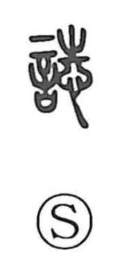

誌

Uncategorized
Kun: shirusu | On: shi
to record ・ record ・ document ・ journal ・ magazine
Explanation
誌 is a phono-semantic character: 言 anchors it in the sphere of speech and writing, while 志 supplies the on reading shi and evokes a mind set on a goal—an inner marking. Extending 志’s sense of “recording in the mind” into written expression, 誌 takes on the verbal meaning “to note down,” and by extension names what is noted: a record or written entry, a document, and ultimately a journal or magazine.